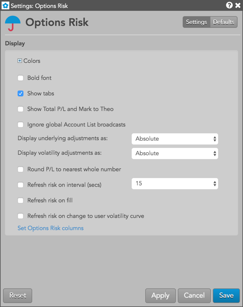

Context Menu settings
- Open — Opens an order entry widget for a selected instrument. You can also open a Time and Sales widget or Charts widget seeded with the selected instrument.
- Create Manual Fill — Opens the Position Manager widget in Manual Fill mode for an
instrument.
- Modify SOD — Opens the Position Manager widget in SOD mode for an instrument.
- Zoom — Allows you to zoom the widget between 50% and 150% percent of the default widget view using a slider control.
- Settings: Options Risk — Opens the local settings menu.
Local settings
These settings affect only the selected Options Risk widget. To update the default settings with these value for newly-opened Options Risk widgets, or to apply them to existing opened widgets, click Defaults in the Settings: Options Risk menu.

The following settings are available:
{% include settings/options-risk-menu-settings.html %}